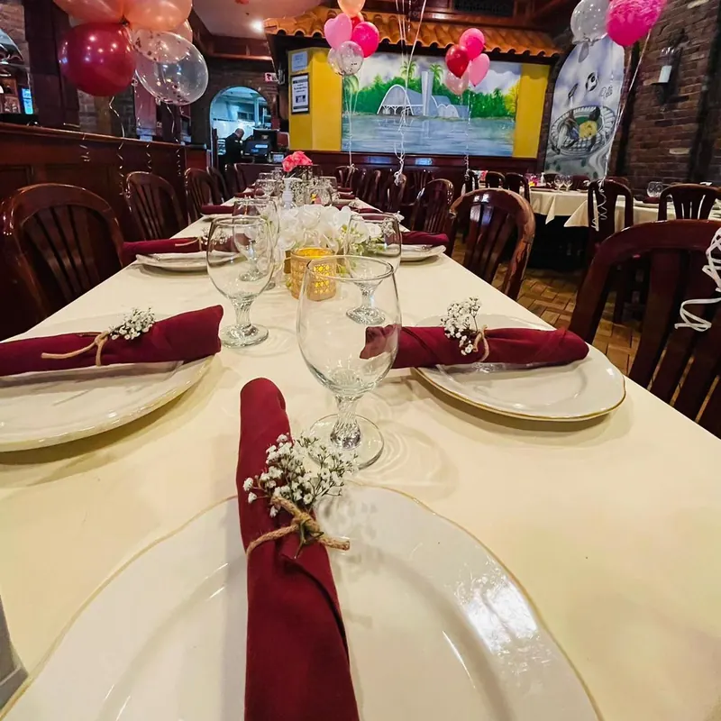
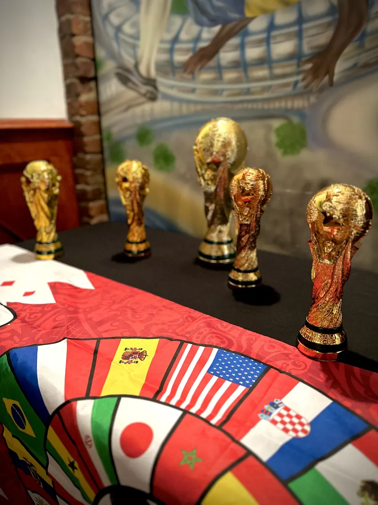
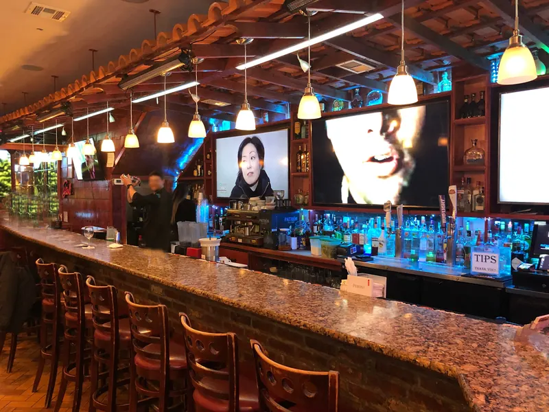

Festas e eventos
Nem pequena, nem grande demais.
Salões privativos de 30 a 100 pessoas, num restaurante de 250 lugares, com buffet e planejamento completo da festa.
Monte sua festa em um minuto.
Escolha a ocasião, os convidados e a data. Transformamos isso num e-mail pronto para a equipe de eventos, ou é só ligar.



